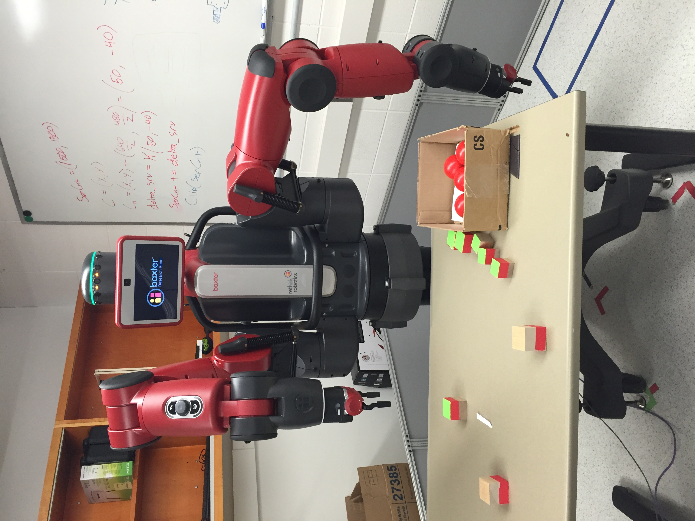

<div class="portfolio-desc">

	<h4 class="thin-title">Baxter Demo Manager
		<a href="#" class="close-overlay">x</a>
	</h4>

	<strong class="about-meta">
		<i class="fa fa-tag"></i>Photo
	</strong>

	<p><strong>Overview</strong>
	<p>This project aims to develop an API for providing a well defined way of starting and stopping the Baxter as well as switching between demos on it. The API is extensible for adding new demos and can be used with different user interfaces(e.g keyboard, graphic user interface). 
	</p> 

	<p>The videos show the Baxter running several demos provided by Rethink Robotics with keyboard and the screen view of the demo manager. For baxter runnin demos please see <a href="https://vimeo.com/148723771">this page</a>. For screen view, please see this <a href="https://vimeo.com/148725733">video</a>. The API is extensible for adding new demos and can be used with different user interfaces(e.g keyboard, graphic user interface). Code is implemented in Python. 
	</p>

	<p>Here is some of the necessary and relevant ROS packages and libraries;
	</p>

	<ul>
		<li><a href="http://wiki.ros.org/smach">SMACH</a></li>
		<li><a href="http://wiki.ros.org/actionlib">actionlib</a></li>
		<li><a href="http://wiki.ros.org/bondpy">bondpy</a></li>
		<li><a href="https://docs.python.org/2/library/subprocess.html">subprocess</a></li>
		
	</ul>

	<p>Python code and more detail about project can be found on this <a href = "https://github.com/elmuhn/baxter_demo_manager.git">page</a>.
	</p>

</div>